Relesead in version 0.9-beta the option for troubleshooting help.
This functions helps with important output about SEA (using lsseas*) and NPIV from your VIOS and informations, vSCSI, vFC (NPIV) and networks from LPAR.
- Thanks Benoit Creau from http://chmod666.org, for the great idea and the code. Contents:
Main menu:

LPAR Troubleshooting
LPAR by ID
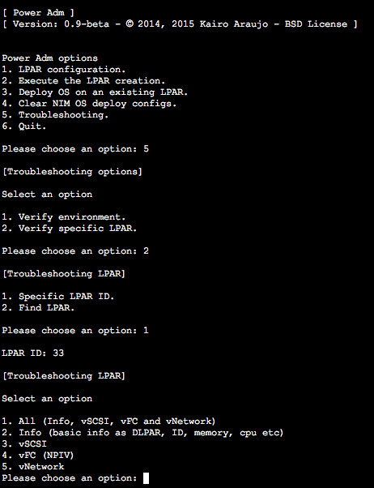
LPAR search
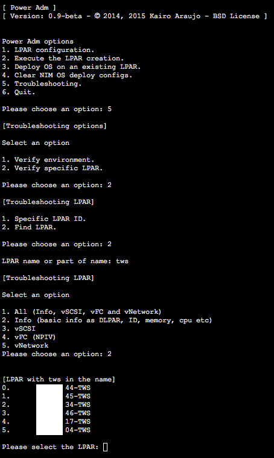
LPAR Info
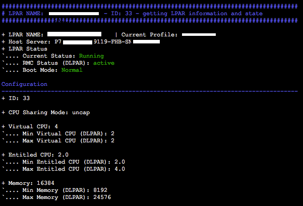
LPAR SCSI
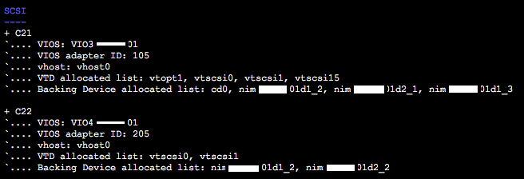
LPAR NPIV
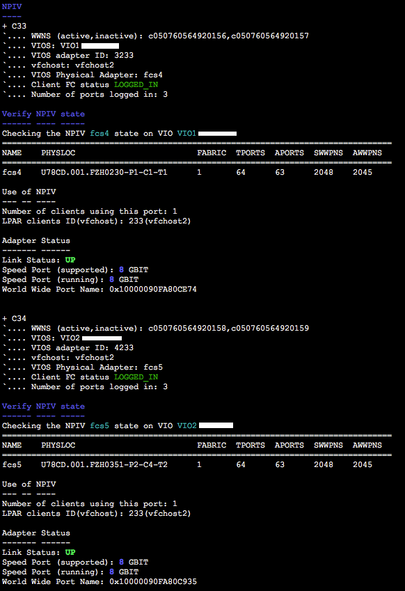
LPAR Networking (using lsseas)
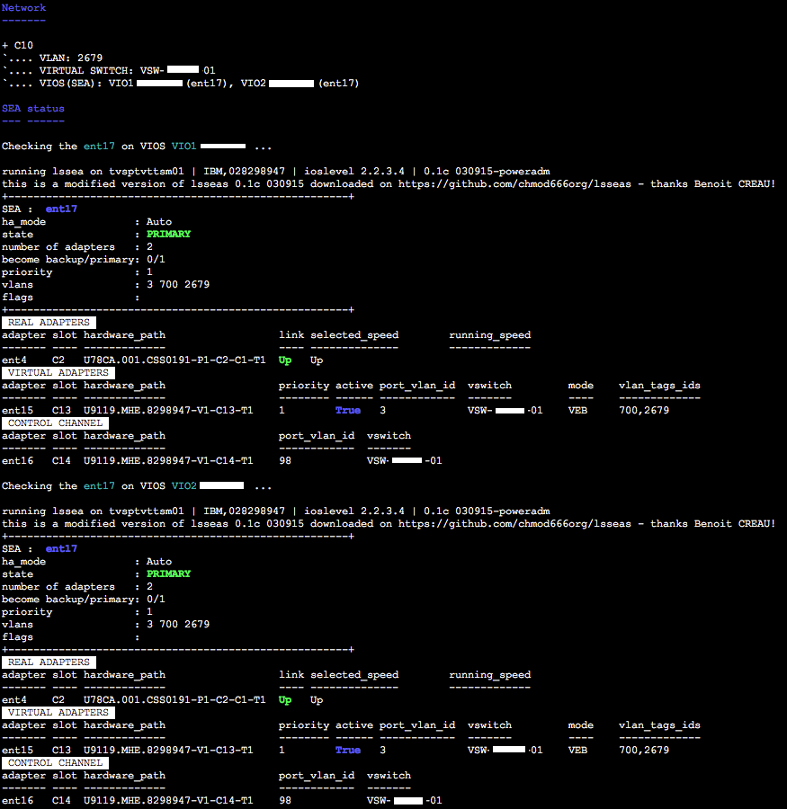
Environment Troubleshooting
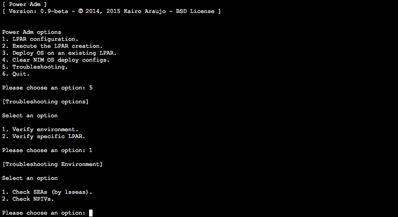
Environment main menu
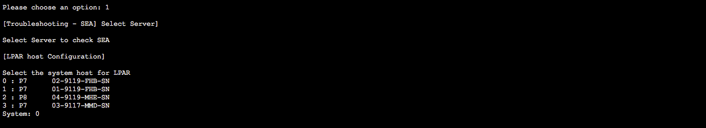
SEA (using lsseas)
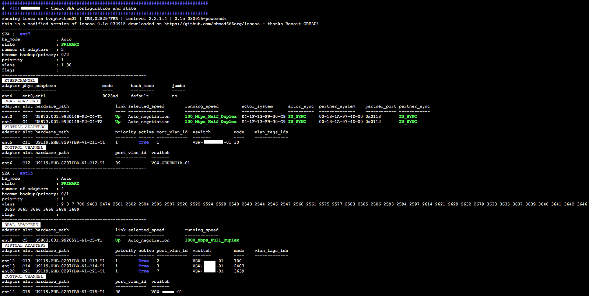
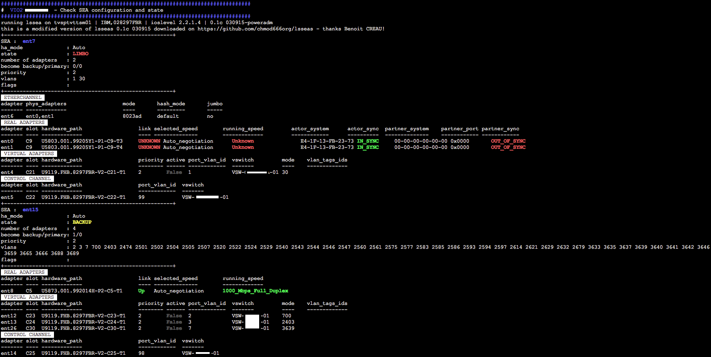
NPIV
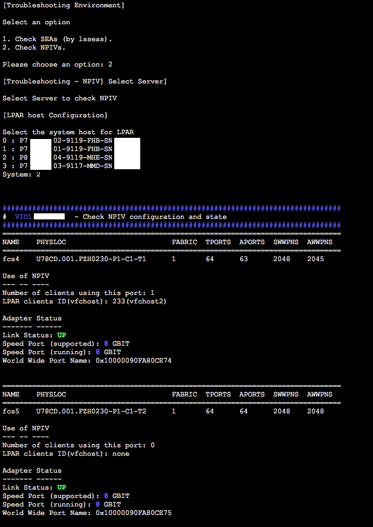
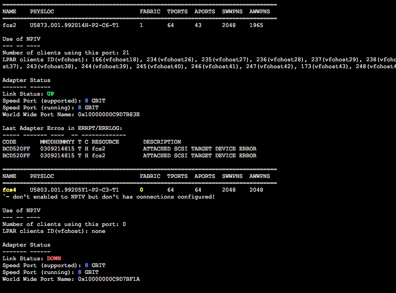